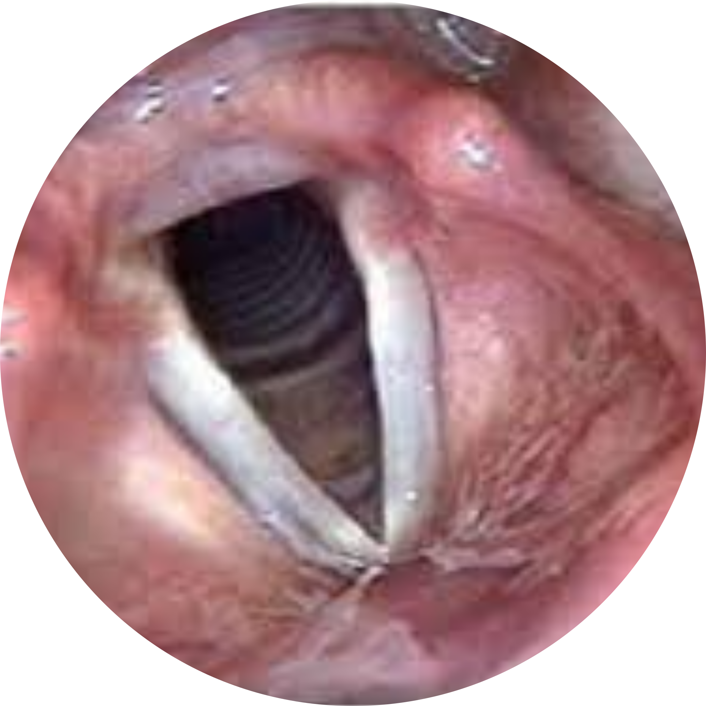
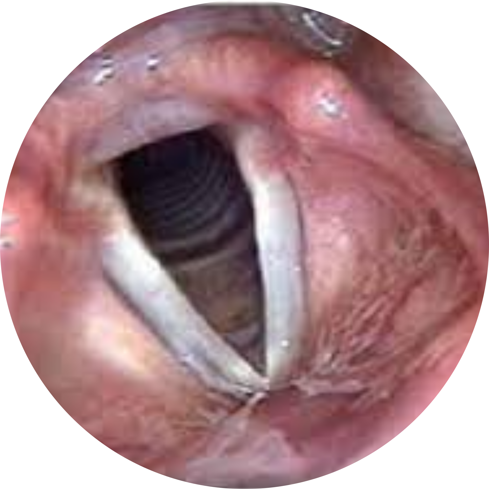

À Propos de l'événement
L'ENDOFORUM ORL est une maniféstation scientifique qui abordera de nombreux aspects de la pathologie otologique, rhinologique et laryngologique (exploration, prise en charge médico chirurgicale, perspectives thérapeutiques nouvelles ...etc) sous differents formats: conférences, tables rondes, symposia et chirurgie en live, et la qualité de ces interventions sera relevée par différents intervenants nationaux et étrangers d'une grande expertise.
Où ?
Palais de la culture, Tlemcen
Quand ?
Jeudi et vendredi
11-12 Mai
Mot du président

Pr Yaziben Yazid
Cher (e) s collègues,
La société algérienne de Rhinologie & Chirurgie endoscopique vous invite cordialement à participer au premier Endo forum ORL qui sera organisé les 11 et 12 Mai Prochain dans la capitale des Zianides Tlemcen, plus précisément, au somptueux palais de la culture.
Deux Journées scientifiques seront dédiées a l’endoscopie ORL, plus particulièrement la chirurgie endoscopique mini invasive de la sphère ORL, un domaine en plein expansion et constitue indéniablement le coté novateur de la spécialité.
Un Programme riche et varié est en cours de préparation, avec des sessions thématiques en chirurgie oto endoscopique, chirurgie du nez et sinus, ainsi que l’endoscopie laryngée. Sont prévues également des conférences, ateliers, ainsi qu’une session de chirurgie en direct, avec des interventions qui seront réalisées et modérées par des experts en la matière.
Durant cet événement, nous aurons le plaisir d’accueillir à Tlemcen des experts nationaux et internationaux qui vont animer les débats et qui contribueront certainement à hisser le scientifique de l’endo forum.
L’objectif principal de ces journées est de promouvoir l’endoscopie ORL, dans ses aspects diagnostique et thérapeutique. Ce dernier volet constitue comme nous le savons tous, l’avenir du traitement chirurgical en ORL, ce qui est valable aussi pour toutes les autres spécialités chirurgicales.
Durant les deux jours, le palais de la culture de Tlemcen sera un lieu de rencontre entre les confrères ORL, jeunes et moins jeunes, mais surtout, une occasion pour le partage de la science. Cet événement constitue alors deux journées de formation médicale continue assurée, au bonheur des étudiants en formation post graduée, et l’occasion aussi pour les autres confrères de mettre à jour leur connaissances dans le domaine. À ce titre, je rappelle que ces FMC constituent un des objectifs et fondements de notre association scientifique.
Enfin, nous remercions d’avance nos partenaires sponsors qui vont participer et qui vont contribuer à la réussite de la manifestation.
Au plaisir de vous Accueillir à Tlemcen.
Conférenciers

Pr Chiraz M'barek
Hôpital lahbib Thameur, Université de Tunis

Pr Sellami Moncef
Université de sfax, Tunisie

Pr Waleed Moneir
Université Elmansura, Égypte
Pr Ahmed El Sobky
University El mansoura Egypt

Dr Bekkhoucha Abdellatif
ORL Libéral, Algérie

Pr Saheb Ali
Chef de service ORL CHU Tizi ouzou, Algérie

Pr Bouferssaoui Abderrahmane
Chef d'unité, EPH Bologhine

Pr Benzamit Makhlouf
ORL Libéral, Sétif

Dr Edde Haimedah
Chef de service ORL, Nouakchott, Mauritanie

Pr Mokhtar Hasbellaoui
Chef de service ORL, CHU Bab El Oued
Pr Yaziben Yazid
Président de la SAR & CEBC
Programme
Conférences & Live surgery
Check-in
Inscriptions – Adhésion à la SAR CEBC et mise à jour des cotisations.
Session Rhinologie 1
Modérateurs: Dj. Selmane, A. Saheb, A. Ouchen
- Actualités dans le traitement de la polypose naso-sinusienne : Ch. Chaouch Mbarek
- Traitement chirurgical de la polypose nasale : M. Benzamit
- Firbrome naso-pharyngien : règles de bonne pratique pour réussir son approche endoscopique. K. Salhi, Bouarroudj
- Qualité de vie après chirurgie de la polypose nasale : Mu. Sellami
Session Endoscopie laryngo-trachéo-bronchique
Modérateurs: A. Daoudi, S. Douche, A. Ouchen, T. Bentebbiche
- Conduite à tenir devant les corps étrangers laryngo-trachéo-bronchiques en milieu pédiatrique : A. Boufersaoui
- Prise en charge des corps étrangers laryngo-trachéo-bronchiques : H. Edde
- Evaluation endoscopique de la pathologie laryngée : T. Bentebbiche
- Cordectomies au laser pour néoplasie du larynx : A. Bekkhoucha
SYMPOSIUM BIOPHARM
Intérêt de l'Azélastine dans la prise en charge de la rhinite allergique.
Pause déjeuner
Session Oto Endoscpie 1 & Instructional Course
Modérateurs : A. Benmansour, S. Touati, A. Mahgoun
- Instructional course, transcanalar endoscopic approchs from A to Z: W. Moneir
- Approche endoscopique de l’otospongiose : T. Benchaa
- Apport du scanner dans l’otospongiose : Z. Berrou
- Approche endoscopique transcanalaire du cholestéatome : K. Hadjbi
Pause café
Instructional course
Modérateurs : DJ. Selmane, A. Saheb, M. Hachemi
- Intérêt de l’endoscopie en pratique courante : H. Sari
- La chirurgie turbinale : Quand, comment et pourquoi ? M. Chiraz, N. Romdhane
Session Otologie 2
Modérateurs: M. Benmansour, Y. Yazibene,
A. Mahgoune
- Anatomie endoscopique de l’oreille moyenne. O. Megherbi
- Otoendoscopic surgey in pediatric patients : The easy abstain. W. Moneir
- Chirurgie de l’otospongiose : Du microscope à l’endoscope. T. Boutiba
- Limites de la chirurgie endoscopique en otologie. M. Hasbellaoui, S. medkour, N. Terkmane, L. Oukaour
Inauguration officielle de L’Endo Forum
Live Surgery
08:30 - 10:30 | Session 1 : Chirurgie otoendoscopique.
Modérateurs : M. Benmansour, S. Touati, D. Kanoun
10:45 - 13:00 | Session 2 : Chirurgie endonasale.
Modérateurs : Dj. Selmane, A. Saheb, D. Kanoun
Operateurs :
- Pr. Y. Yazibene
- Pr. M. Benzamit
- Pr Mu. Sellami
- Dr K. Hadjbi
SYMPOSIUM INPHAMEDIS
Pause déjeuner
Session Laryngologie
Modérateurs: A. Daoudi, S. Douche, I. Brahami,
T. Bentebbiche
- Prise en charge endoscopique des sténoses laryngo trachéales . A. Bekhoucha
- Coblation Supraglottoplasty : 10 years experience A. El Sobky
- Chirurgie endoscopique laryngée pédiatrique : Particularités. A. Bekhoucha
- Endoscopic treatment of congenital posterior laryngeal cleft. A. Sobky
Pause-café
Conférences Rhinologie 2
Modérateurs: M. Benzamit,
Chi. Chaouch Mbarek, M. Ouchen
- Traitement de la polypose nasosinusienne dans l’ère de la biothérapie. H. Bouraba, F. Boudjenah
- Chirurgie du Papillome inversé. Mo. Sellami
- Sinusite fongique allergique : du diagnostic au traitement. Ch. Chaouch Mbarek
- Pourrais-je opérer un Fibrome Naso-Pharyngien sans embolisation ? Quand ? comment et pourquoi ? Y. Yazibene
Clôture de l'EndoForum
Ateliers
Session 1 Modérateurs : O. Megherbi, N. Mahtari, N. Benguedada
- 13:20 à 13:45 | Atelier 1 : Anatomie endoscopique chirurgicale en Rhinologie. M. Hasbellaoui
- 13:45 à 14:10 | Atelier 2 : Comment réparer une perforation septale Endoscopiquement ! trucs et astuces S. Bouhafara
- 14:10 à 14:35 | Atelier 3 : Endoscopie nasale en ORL pédiatrique : Quand ; comment faire et quoi retenir ? A. Saheb
- 14:35 à 15:00 | Atelier 4 : Initiation à l’endoscopie bronchique pédiatrique. A. Boufersaoui
Session 2 Modérateurs : I. Brahami, S. Kadi, Y. Moussaoui
- 15:00 à 15:25 | Atelier 5 : Chirurgie endoscopique de l’atrésie choanale. Mo. Sellami
- 15:25 à 16:50 | Atelier 6 : Evaluation de la perte auditive par les PEA et ASSR. D. Kanoun, N. Mahtari
Session 3
Modérateurs : A. Mahgoun, A. Ouchen, S. Touati
- 14:00 à 14:25 | Atelier 7 : La stapédectomie endoscopie : step by step. K. Hadjbi
- 14:25 à 14:50 | Atelier 8 : Laser Diode en Chirurgie Laryngée. D. Sid ahmed, k. ouennoughi
Session 4
Modérateurs : O. Megherbi, T. Boutiba, N. Benguedada
- 15:00 à 15:25 | Atelier 9 : Dacryocystorhinostomie endoscopique de A à Z. C. Hamadi
- 15:25 à 15:50 | Atelier 10 : Approche endoscopique des rétractions tympaniques. S. Touati, A. Ouchene
- 15:50 à 16:15 | Atelier 11 : Traitement endoscopique de l’épistaxis.. MU. Sellami
- 16:40 à 16:55 | Atelier 12 : Gestion pratique des complications de la chirurgie endoscopique endonasale. M. Hachemi
- 17:00 à 17:25 | Atelier 13 : La maxillectomie interne au cours de la chirurgie du Papillome inversé, quand et comment la réaliser ? Y. Moussaoui
Ateliers Pratiques
Dissection de l'os temporal sur rocher synthétique Organisé par : Anatomis
Frais d'inscription
Catégorie 1
6000 DA
- Médecin spécialiste ORL
Catégorie 2
4000 DA
- Adherent de la société SAR & CEBC
- Médecin Généraliste
- Résident ORL
Emplacement
Organisateur
SAR & CEBC
La société algérienne de rhinologie et de chirurgie endoscopique de la base du crane "SAR et CEBC" est une association scientifique a but non lucratif qui réunit plusieurs spécialités (ORL, chirurgie maxillo faciale, neurochirurgie et ophtalmologie) dont le but est de développer et de promouvoir la formation post universitaire de ces différentes spécialités, et d'introduire des techniques novatrices et modernes dans la prise en charge des patients.

Sponsors & Partenaires


F.A.Q
-
C'est quoi un Endoforum ORL ?
Événement scientifique ORL qui aborde le volet endoscopique de la sphère ORL (diagnostic et les procédures chirurgicales endoscopiques du nez oreilles et le larynx ).
-
Quels sont les thèmes de cette édition?
- Chirurgie endoscopique des sinus : Traitement des sinusites chronique.
- Oto-Endoscopie de l’oreille moyenne : Réhabilitation de l'audition.
- Chirurgie endoscopique Pharyngo-Laryngée : Traitement endoscopique des sténoses laryngo-tracheales. -
Qui peut participer ?
L'événement est ouvert aux spécialistes ORL, aux résidents ORL, ainsi qu'aux généralistes
-
Où va se dérouler l'Endoforum ?
L’Endoforum ORL aura lieu les 11 et 12 mai 2023.
-
Quel est l'emplacement exact ?
Palais de la culture, Tlemcen.
-
Quand puis-je m'inscrire ?
Nous vous encourageons à vous inscrire dans le formulaire dès que possible car les places sont limitées.
-
Comment puis-je m’inscrire à l'EndoForum ORL?
Vous pouvez vous inscrire en cliquant sur le bouton " Inscrivez-vous ici " ci-dessus et en remplissant le formulaire.
-
Comment puis-je m’inscrire à l'atelier pratique de dissection de l'os temporal sur rocher synthétique ?
Pour tout renseignement sur cette atelier, veuillez contacter le service commercial de anatomis sur leurs numéros de téléphones : 0542623294 ou 0561029717
-
Combien payer les frais de l'inscription ?
Les frais d'inscription sont de 5000 DA pour les spécialistes ORL. Si vous êtes adhérent de la société SEB & CEBC, résident ORL ou médecin généraliste, vous bénéficiez d'une réduction de 40%, vous ne payez donc que 3000DA. Nous vous informons que ces montants sont maintenus jusqu'au 10 avril, ensuite ils seront respectivement de 6000 Da et 4000 Da.
-
Les services d'hébergement et de restauration sont-ils inclus? ?
Les frais d'inscription couvrent uniquement l'accès aux conférences et à la chirurgie en direct, la pause-café et le déjeuner. Le dîner et l'hébergement ne sont pas inclus.
-
Comment payer les frais de mon inscription ?
Vous devez effectuer un paiement sur le compte bancaire de la société SAR & CEBC (vous trouverez les détails dans le formulaire d'inscription) et le bordereau de versement doit être importé dans le formulaire pour que vous puissiez valider votre inscription.
-
Si j'ai des questions, qui puis-je contacter ?
Merci de nous contacter sur notre boite mail eventartifact@gmail.com